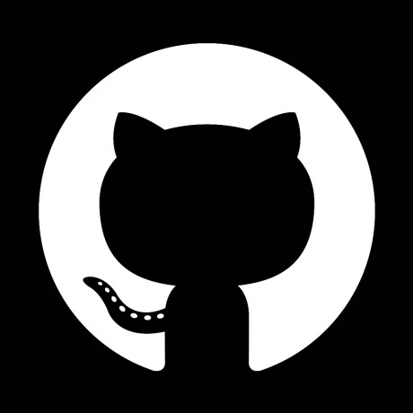

✈백엔드 개발자
김성호 입니다.
함께하는 성장의 가치를 나누고 싶습니다.
동료는 저를 통해, 저는 동료를 통해 성장합니다. 함께의 가치를 실천하고 싶어 개발 스터디를 운영하고 있습니다.
돌아볼 수 있음으로써 나아갈 수 있습니다.
학습한 것들을 정리하고 프로젝트에서 느낀 점들을 회고하는 블로그를 운영하고 있습니다.
github : 
velog :

기술 스택
프로젝트
CAU VOTE
(24.09.09~) 배포 중 / 1인 개발
40명+ 가량 이용중인 1인 개발한 대학교 펜싱동아리 훈련 투표 사이트입니다.
정해진 시각에 투표가 열려 선착순으로 투표할 수 있습니다.
내가 기여한 부분
- 캐싱 처리 및 스케줄러 관리
- redis를 이용하여 랭킹 조회 캐싱 처리
- refactor : redis 자료구조 sorted set을 이용하여 조회 로직에서 O(NlogN)의 시간복잡도를 O(logN)으로 감소.
- 스프링 스케줄러를 활용하여 주간 및 학기 별 업데이트 실행
- 실시간 데이터 업데이트 및 동시성 문제 해결
- 웹소켓 API와 STOMP를 이용하여 실시간 투표 정보 업데이트
- refactor : websocket이 끊기고 close-wait 상태로 남아있던 소켓을 heartbeat 알고리즘을 통해 삭제
- ConcurrentLinkedQueue를 통해 순차적으로 투표를 진행하여 동시성 문제 해결
- refactor : redis를 이용하여 투표 테이블을 전체 탐색하여 각각 참여인원을 매핑하는 코드를 캐싱 처리
원자적으로 참여인원을 증가시켜 동시성을 제어
- CI/CD 파이프라인 구축
- Docker와 git actions를 이용하여 컨테이너 환경에서 배포 및 CI/CD 파이프라인 구축
베리 마켓
(24.12.27~ 25.01.27) 배포 중단 / Tech Leader
중고 제품을 구매/판매 할 수 있는 실시간 경매 서비스 입니다.
누구나 판매자가 될 수 있으며, 버려지는 자원을 재활용 할 수 있습니다.
내가 기여한 부분
- 실시간 입찰 기능
- redis를 이용하여 입찰 내역 캐싱 처리 및 동시성 제어
- redis와 ehcache, memcached 등의 캐시 솔루션 및 RDBMS 중 자료구조와 동시성 제어에 적합한 redis 선택 후 적용
sorted set으로 전에 들어온 입찰가와 비교하여 원자적으로 가격 설정 - 웹소켓과 STOMP를 활용해 실시간 입찰
- 마이크로 서비스 아키텍처 적용
- kafka와 feignclient를 활용한 도메인 끼리의 이벤트 기반 데이터 송수신
- kafka와 rabbitMQ 중 특정 시간에 몰리는 입찰의 특성 상 서비스의 안정성 고려 서버 병렬 확장 및 상태 복구에 적합한 kafka선택
- 도메인 주도 설계를 고려해 레이어드 아키텍처 적용
CODEBACK
(24.08.17~24.09.25) 배포 중단
시니어와 주니어 개발자 간의 상호 작용을 통하여 코딩 능력을 향상시키고,
성장을 촉진시키는 코드 및 프로젝트 리뷰 플랫폼 입니다.
내가 기여한 부분
- 인증 및 인가 관리
- Oauth2.0과 Spring Security를 이용한 로그인 및 회원가입 기능 구현
- Email Sender, JWT Token을 통한 인증 및 인가 관리 서비스 구현
- 도커 환경 구축 및 AWS EC2에 배포
- Docker와 EC2를 활용하여 컨테이너 환경에서 배포
- route53을 통해 DNS hosting 및 https 인증서 발급 후 적용
토이 프로젝트
쿠폰 서비스
(24.12.05~ 24.12.11) / 1인 개발
깃 허브 주소 >>내가 기여한 부분
- 오래된 쿠폰 데이터 아카이빙
- mongoDB를 활용하여 지워진 지 오래된 데이터 마이그레이션
- Spring Batch를 활용하여 일정 주기에 chunk 단위로 데이터 아카이빙 진행
- 동시 쿠폰 사용 처리
- Redis에 쿠폰 번호 lock을 생성하여 분산 락을 이용한 동시성 처리
- circuit breaker를 활용하여 서버 내부에서 concurrentHashMap 사용하여 장애 대응
음식 배달 서비스
(24.11.08~ 24.11.18) / Tech Leader
깃 허브 주소 >> 노션 주소 >>내가 기여한 부분
- 테스트 코드 및 REST docs
- WebMvcTest, SpringBootTest, DataJpaTest를 활용해 각 레이어에서 단위 및 통합 테스트
- 테스트가 통과하면 Spring Rest docs에 자동으로 결과가 반영된 문서 생성
- Query DSL 활용
- OrderSpecifier,BooleanExpression을 구현하여 주문, 결제, 리뷰를 분류하고 페이지네이션 처리
- nGrinder를 활용하여 상황 별 쿼리 속도를 분석하여 N+1 문제를 예방하고 쿼리 성능을 최적화
- refactor : 기존 projection 방식에서 fetchjoin으로 변경하여 TPS 94 => 113 으로 증가
회고 및 트러블 슈팅
교육
중앙대학교 수학과 학사 (2017.03~2024.02)
중앙HTA (2024.03~2024.09)
Public Cloud 활용 자바 웹 애플리케이션(Spring, Docker)
스파르타코딩클럽 (2024.11~2025.01)
마이크로서비스 아키텍처(MSA) 및 도메인 주도 설계